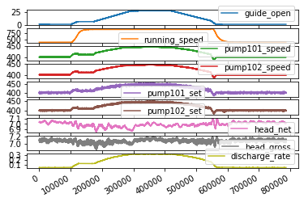
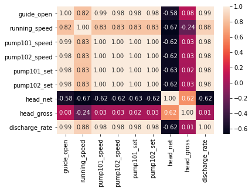
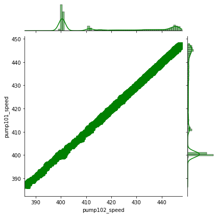

Colab RNN for Vattenfall project by GPU
- Explore statistical correlation between different parameters
- ML to get static condition
- Deep learning to test $Head$ in terms of pump speed and $head$
import pandas as pd
import numpy as np
import matplotlib.pyplot as plt
from __future__ import print_function
%matplotlib inline
import seaborn as sns
from pandas.plotting import register_matplotlib_converters
# plt.style.use(['science','no-latex'])
# plt.rcParams["font.family"] = "Times New Roman"
%load_ext autoreload
%autoreload 2
## load the file from local directory
#from google.colab import files
#uploaded = files.upload()
from google.colab import drive
drive.mount('/content/drive')
#drive.flush_and_unmount()
#print('All changes made in this colab session should now be visible in Drive.')
Mounted at /content/drive
from google.colab import drive
drive.mount('/content/drive')
Mounted at /content/drive
New Section¶
#import io
#df = pd.read_csv(io.StringIO(uploaded['vattenfall_turbine.csv'].decode('utf-8')))
df = pd.read_csv('/content/drive/MyDrive/Data/vattenfall_turbine.csv')
keys = df.dtypes.index[1:11]
df_data = df[df.dtypes.index[1:10]]
df_data.plot(subplots=True)
#plt.tight_layout()
plt.show()

#sns.lmplot(df.dtypes.index[1],df.dtypes.index[2], data=df, fit_reg=False)
sns.heatmap(df_data.corr(), annot=True, fmt=".2f")
plt.show()
sns.jointplot(data=df_data, x='pump102_speed', y='pump101_speed', kind='reg', color='g')
plt.show()

